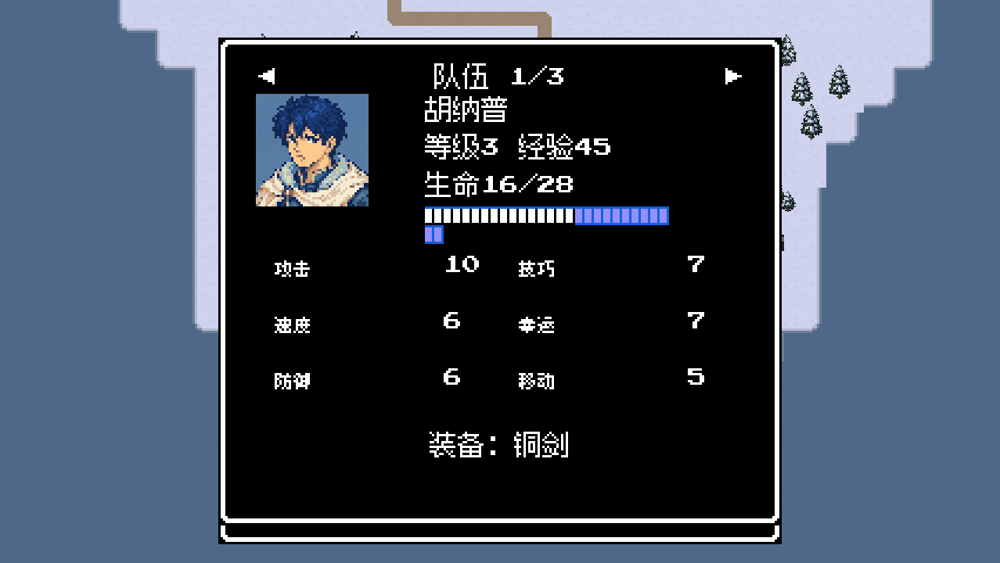
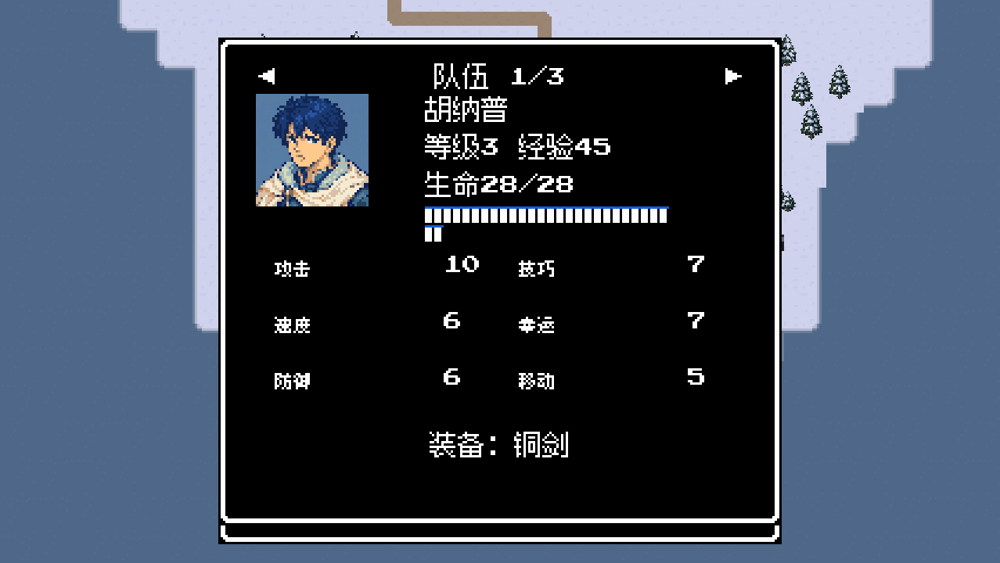
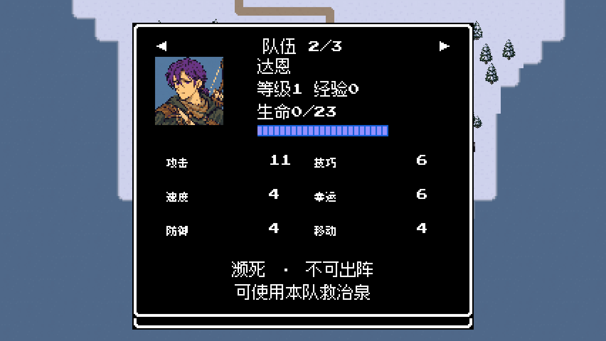
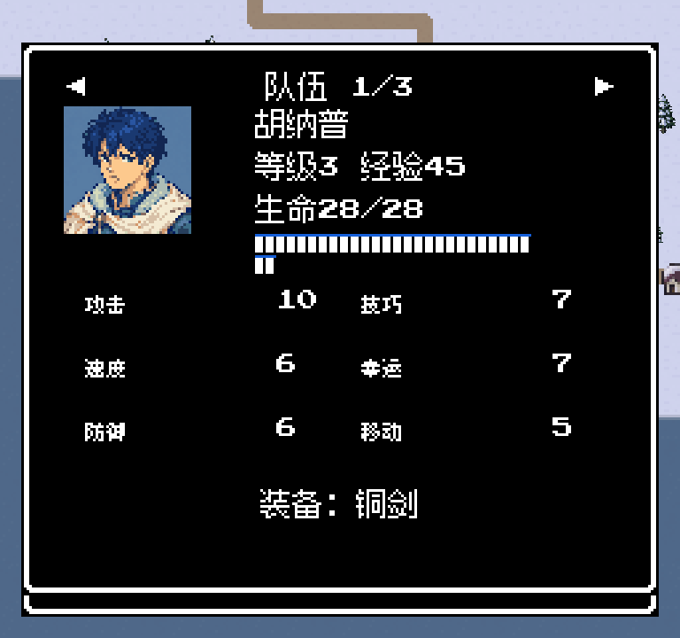
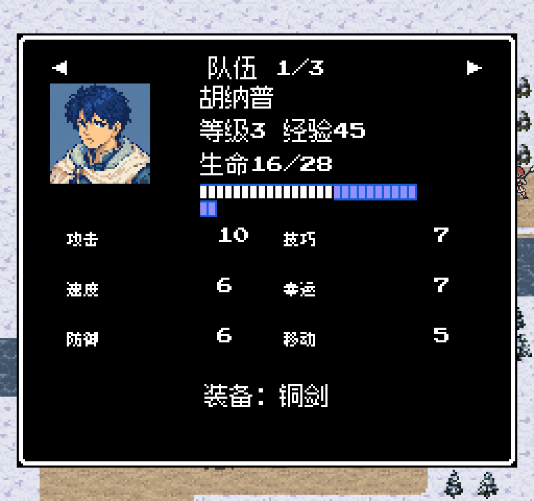

正常正式成员胜利结算后立即回满血；旧战后记录读取时补齐。濒死与战斗中途伤势保留。
画面使用独立状态夹具重现16/28；未改写玩家存档。此次是源码修复，现有0.10.0安装包未重新导出。
生命16/28。恢复延迟到了下一场战斗开始。

生命28/28，部队记录与28格血条一致。

达恩维持0/23，仍不可出阵，须专门救治。

正常成员28/28，文字与血条处于背景安全区域。

仍为16/28，中途读档不恢复受伤生命。
